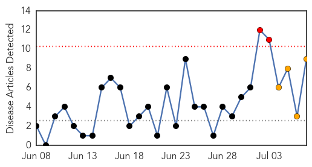
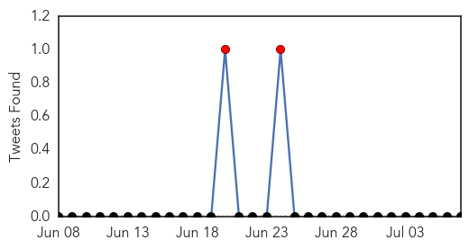
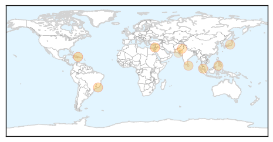
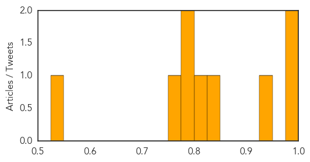

Toggle navigation
Early Warning
Daily Alerts
Dengue Fever
Jul 07, 2014
Compare to:
-
Hemmorhagic Fever
Mold/Fungal Infection
Influenza
Meningitis
Pertussis / Whooping Cough
Middle East Respiratory Syndrome
Cholera
Hepatitis
Chikungunya
Yellow Fever
Bubonic Plague
West Nile Virus
Swine Flu
Ebola
Measles
Unknown
Mumps
30 Day Trends
Web: 2
alerts
, 4
warnings
Twitter: 2
alerts
, 0
warnings
Top Articles:
0.994
First case of chikungunya in The Bahamas
0.983
Caribbean travelers, take note
0.938
Brazil Tries Natural Method to Eradicate Dengue
0.838
Malaysia Steps up Measures to Control Japanese Encephalitis
0.805
A Mosquito-Repellent Newspaper in Sri Lanka
0.790
Zamboanga on alert as dengue cases rise
0.775
‘More efforts urged to control dengue’
0.752
Ministry contemplates providing JE vaccine in high risk areas
0.530
Monsoons approach: Dengue spread feared as officials fail to allocate funds for prevention
Top Tweets:
No tweets found for Jul 07, 2014
Web/News Articles

Tweets

Article Locations

Article Confidences
